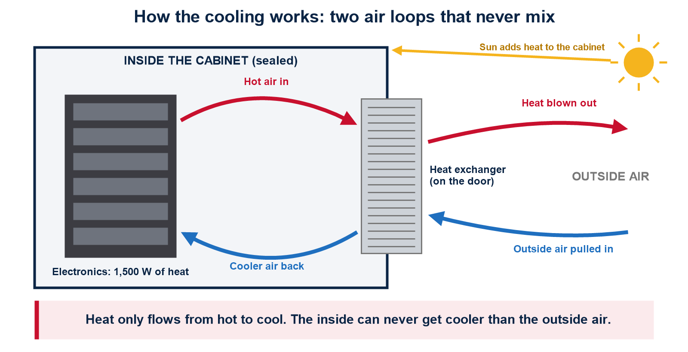
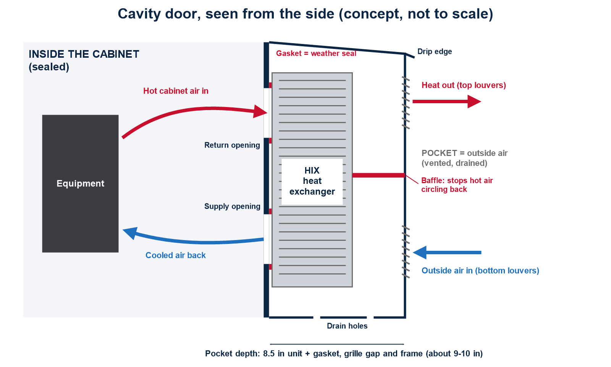
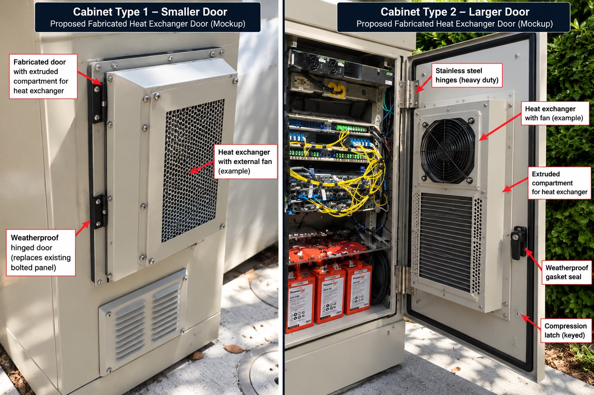
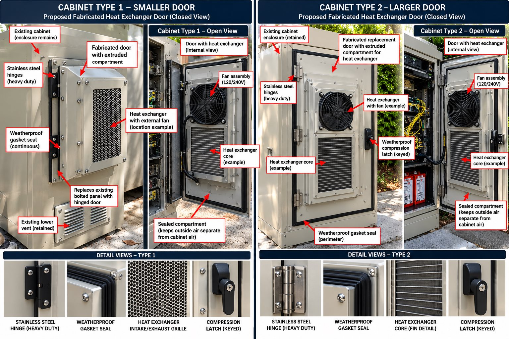
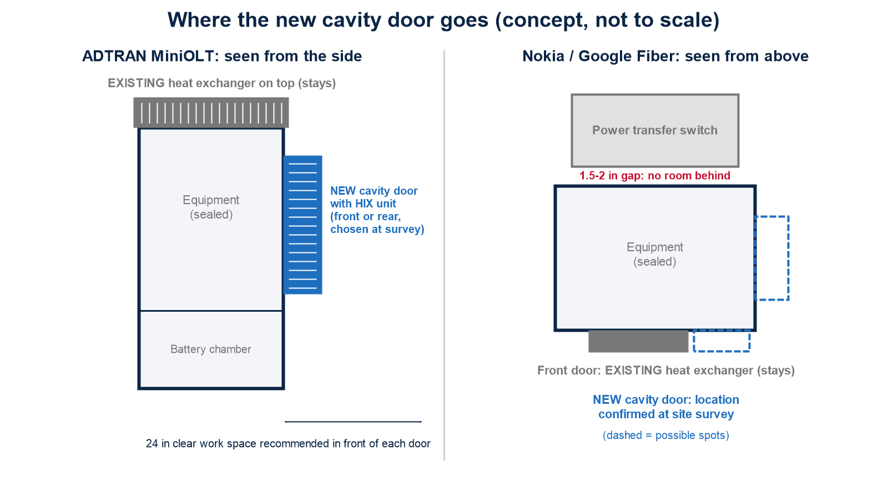

7076 Island Village Dr, Long Beach, CA 90803
310.488.7205
www.basicamericannetworks.com
| Basic American Enterprises LLC 7076 Island Village Dr, Long Beach, CA 90803 310.488.7205 www.basicamericannetworks.com |
ADTRAN MiniOLT (Crossover Enclosure) and Nokia / Google Fiber Compact Cabinet | 8 October 2026
| Prepared for | Google Fiber Inc. | Attention: Biswajit De 1600 Amphitheatre Parkway, Mountain View, CA 94043 |
| Prepared by | Basic American Networks, a Basic American Enterprises LLC company |
| Point of contact | Fran McGrath | 310.488.7205 |
| Proposal number | 4344 |
| Valid until | 7 November 2026 (30 days from issue) |
Thank you for the opportunity to propose this work. Basic American Networks proposes to add a second, independent cooling unit to each of your outdoor fiber cabinets, so they can carry a planned increase in electronics while running cooler and more reliably. The existing cooling unit in each cabinet stays in place and keeps working.
The new unit is housed in a custom-fabricated cabinet door with a built-in pocket. The pocket protects the unit from weather and tampering, keeps the cabinet's inside space free for equipment and service, and gives the finished cabinet a factory-built look.
| Item | Proposal |
|---|---|
| Cabinets covered | ADTRAN MiniOLT in Crossover Enclosure (document 6419254FDCL1-5C) and Nokia / Google Fiber Compact Cabinet, outdoor version (Nokia 3MV00858AA / Vertiv F20200000). |
| Solution | One fabricated cavity door per cabinet, bulging outward, carrying a VoltAire HIX Series closed-loop heat exchanger. Existing cooling stays in service. |
| Design heat load | 1,500 W per cabinet: 1,000 W existing + 500 W planned [to be confirmed on site]. |
| Cooling goal | Lower cabinet temperature by about 10°C (18°F). The reference point (sensor location, outdoor design temperature) is defined in Phase 1. |
| Estimated result (ADTRAN) | With the HIX55 added, the inside is estimated to run about 9.7°C above outdoor air at 1,500 W, compared with about 18°C above outdoor air today at 1,000 W (before sun load; see section 4). |
| Approach | Three phases: (1) Prototype and discovery, (2) Field test and refinement, (3) Production and rollout. See section 8. |
| Phase 1 investment | $69,000, fixed price, all-in: survey, engineering, two prototype doors with HIX55 heat exchangers, installation and project management. |
The cabinets' existing cooling units work like a radiator, not an air conditioner. They move heat from the sealed inside to the outdoor air without letting outside air, dust or moisture in. That means:

| Cabinet | Existing heat exchanger |
|---|---|
| ADTRAN Crossover Enclosure | Mounted on top of the equipment chamber. Rated 55 W/°C (ADTRAN P/N 1353903). ADTRAN states an effective rating of 1,000 W at 46°C ambient (700 W at 51.7°C), allowing for sun load. Powered from −48 VDC fuse F3 (5 A). |
| Nokia / Google Fiber outdoor cabinet | Mounted on the front door. Rating is not published in the installation guide; to be read from the unit's nameplate in Phase 1. Powered from −48 VDC distribution position A. |
| Model | Cooling capacity | 115 VAC current | 230 VAC current | Size H × W × D (in) | Weight |
|---|---|---|---|---|---|
| HIX25 | 45 W/°C | Not available in AC (48 VDC only) | 22.8 × 11.8 × 5.3 | 20.1 lb | |
| HIX35 | 63 W/°C | 3.4 A | 0.9 A | 35.5 × 17.6 × 5.3 | 40.3 lb |
| HIX45 | 81 W/°C | 3.4 A | 1.9 A | 35.5 × 17.6 × 6.5 | 45.6 lb |
| HIX55 (proposed, AC) | 99 W/°C | 3.5 A | 1.9 A | 35.5 × 17.6 × 8.5 | 47.5 lb |
The new unit is AC powered (VoltAire model HIX055M, 115 VAC, or HIX055N, 230 VAC; voltage chosen at survey). AC models connect through a cord grip and offer optional fan on/off temperature control; VoltAire's fan speed and alarm control board is supplied on 48 VDC models only. All HIX units: operating range −40°C to +70°C; UL 1995 and Type 4(X); closed loop; built to GR-487. The HIX35, 45 and 55 share the same height, width and cabinet cutout, so one door design can take any of the three by setting the pocket depth for the HIX55. VoltAire's ordering page lists 66 and 85 W/°C for the HIX35 and HIX45; its main data table and the unit conversion give 63 and 81, which are used here. To be confirmed with VoltAire.
To hold the inside 10°C above outdoor air at 1,500 W, the two units together must move about 150 W per °C, before sun load.
| Configuration | Combined rating | Heat load | Inside above outdoor air (estimate, before sun) |
|---|---|---|---|
| Today: existing unit only | 55 W/°C | 1,000 W | about 18°C |
| Existing only, after upgrade | 55 W/°C | 1,500 W | about 27°C |
| Existing + HIX25 (DC only; not an option for AC) | 100 W/°C | 1,500 W | about 15°C |
| Existing + HIX35 | 118 W/°C | 1,500 W | about 12.7°C |
| Existing + HIX45 | 136 W/°C | 1,500 W | about 11°C |
| Existing + HIX55 (proposed) | 154 W/°C | 1,500 W | about 9.7°C |
Estimates divide heat load by the combined published rating at full fan speed. Real results are lower because of sun load, airflow inside the cabinet and fan control. Phase 2 field testing confirms actual performance.
The HIX55 alone moves 99 W/°C, enough on its own to hold about 15°C above outdoor air at 1,500 W. The combined result depends on the existing unit's rating, read from its nameplate in Phase 1.


Concept mockup: fabricated door with outward pocket for the heat exchanger, smaller door (left) and larger door (right). Final design is set in Phase 1.

Concept mockup: closed and open views, with stainless steel hinges, continuous weatherproof gasket, intake and exhaust grille and keyed compression latch.

| Item | ADTRAN Crossover Enclosure | Nokia / Google Fiber outdoor cabinet |
|---|---|---|
| Cabinet size | 44.6 in H × 24.5 in W × 24.5 in D | Not published for outdoor version; base is 24 × 16 in. Measure in Phase 1. |
| Doors | Front and rear; lift off (hook at bottom, two tamper-proof screws, padlock hasp) | Front door carries the existing unit; louvered side panels on the battery compartment |
| Where the cavity door goes | Front or rear door, chosen at survey to avoid blocking equipment | Confirmed at survey. The power transfer switch sits 1.5 to 2 in behind the cabinet, so the rear is not available. |
| Unit | HIX55, AC | HIX55, AC, proposed; final model after the existing unit's rating is known |
| Power feed | AC circuit and breaker sized for the HIX55 (3.5 A at 115 VAC or 1.9 A at 230 VAC); source confirmed at survey | AC circuit and breaker sized for the HIX55; source confirmed at survey |
| Clearance in front | ADTRAN recommends 24 in of pad in front of each door; check against the 9 to 10 in pocket | Check against the pad and walkway at each site |
Temperature monitoring of both prototypes through hot, sunny, full-load conditions; design changes based on the results; test report and go / no-go recommendation.
Fabrication and installation of cavity doors on the remaining cabinets, with as-built records.
All electrical work is performed by appropriately licensed personnel, in line with the National Electrical Code, local codes and the cabinet manufacturers' instructions.
| Phase | Work | Output | Timing |
|---|---|---|---|
| 1. Prototype and discovery | Survey two sites; agree the definition of "10°C cooler"; engineer the doors; fabricate and install two prototypes (one ADTRAN, one Nokia). | Two working prototypes; drawings; Phase 1 report | 8 to 12 weeks |
| 2. Field test and refinement | Monitor temperatures outside, inside and on equipment hot spots through a hot, sunny, full-load period; refine the design. | Test report; go / no-go | 6 to 8 weeks |
| 3. Production and rollout | Fabricate and install doors for the remaining cabinets. | Installed doors; as-built records | 8 to 12 weeks |
Each phase starts only with the client's written approval. Phases 2 and 3 are quoted separately, based on Phase 1 results and the number of cabinets.
| Phase | Price |
|---|---|
| Phase 1: Prototype and discovery, fixed price, all-in. Includes site surveys, engineering and drawings for both cabinet types, two VoltAire HIX55 heat exchangers, two fabricated cavity doors, installation materials, freight, installation, project management and the Phase 1 report. | $69,000 |
| Phase 2: Field test and refinement | Quoted after Phase 1 |
| Phase 3: Production and rollout | Per cabinet; see indicative pricing below |
| Cabinets per order | Price per cabinet |
|---|---|
| 1 to 3 | $10,450 |
| 4 to 6 | $10,050 |
| 7 to 24 | $9,650 |
| 25 to 99 | $9,250 |
| 100 or more | $8,800 |
Per-cabinet pricing includes one VoltAire HIX55 heat exchanger, one fabricated cavity door, mounting of the heat exchanger in the door, installation at the cabinet, installation materials, freight and project management. For example, the 78 cabinets in the local market would be about $721,500 at the 25 to 99 tier. Indicative pricing is subject to Phase 1 and Phase 2 results, final supplier pricing and site conditions, and is confirmed in a Phase 3 quote. Power system upgrades, where needed, are quoted separately.
Payment terms: 50% ($34,500) due up front on signing, to order equipment; 50% ($34,500) due on completion of Phase 1. Prices exclude applicable sales tax, permits and utility fees unless stated. Equipment pricing is based on current supplier pricing and is held until the validity date on page 1.
Changes to scope, schedule or quantities are made by written change order agreed by both parties before the work proceeds.
Fabricated doors carry a workmanship warranty of one (1) year from installation. HIX heat exchangers carry the manufacturer's warranty, passed through to the client. Warranty excludes damage from accidents, vandalism, misuse or unauthorized modification. The client should confirm that the retrofit does not affect any cabinet or equipment warranty from ADTRAN, Nokia or Vertiv.
This proposal and its pricing are confidential and provided for the client's evaluation only. They may not be shared with third parties without the written consent of Basic American Enterprises LLC.
This proposal is valid until the date shown on page 1. After that date, pricing and schedule are subject to review.
To accept this proposal, please sign below and return a copy.
| G Fiber | Basic American Networks |
|---|---|
| Signature: Name: Title: Date: | Signature: Name: Title: Date: |